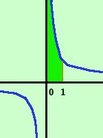
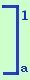
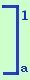

|
Calcolare l'area della regione di piano compresa fra la curva y=1/x e l'asse delle x tra gli estremi 0 ed 1  Facciamo la rappresentazione grafica dell'area cercata ricordando che la funzione y=1/x e' l'iperbole equilatera riferita ai propri assi L'area cercata e' quella evidenziata; Faremo: 1/x dx = Sorge un problema: per x=0 la funzione y=1/x non e' definita e quindi dovremo fare lima-> 01/x dx = siccome l'integrale di 1/x vale log x (logaritmo naturale di x) avremo: = lima-> 0  log x  =
log 1 - lima-> 0 log a = log x  =
log 1 - lima-> 0 log a = = 0 - (- L'area compresa nella regione in questo caso e' infinita |